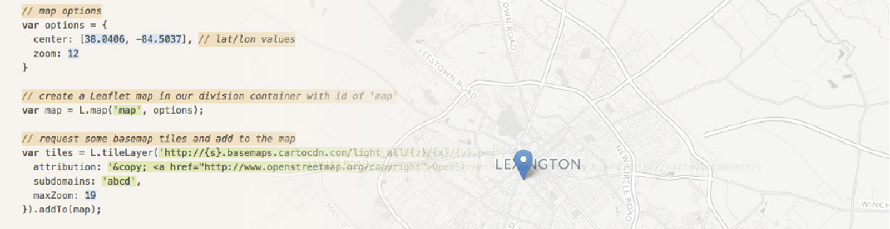
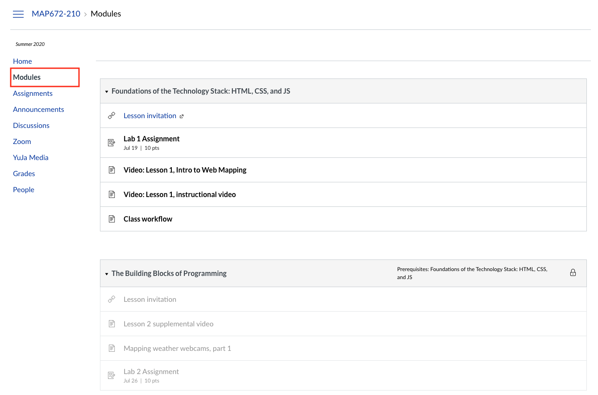

MAP 672: Programming For Web Mapping

Department of Geography
The University of Kentucky, College of Arts and Sciences
October 21 – December 22, 2024
Online via Canvas
Section: 210 (4 credits)
Instructor: Boyd Shearer
Office: Online via Zoom (by appointment) and POT805A
Office Times: 1–2:30 pm Wednesdays and Thursdays (Lexington time), and by appointment
Table of Contents
- MAP 672: Programming For Web Mapping
Methods of Contact
Online office hours
If you are on campus, you are invited to visit my office. Alternatively, you may choose to schedule a custom time meet online. Find the link to Zoom in the Canvas Zoom section. You do not need to share your camera, but be prepared to share your screen and microphone.
Forum
For general questions about tasks relevant to completing assignments, please start by creating a new discussion in our Canvas Discussions section. If you find a post that you can help with, please contribute.
Please follow these guidelines when posting to the discussion boards:
- Start a new discussion and include a detailed subject line
- When replying, make sure you reply to the correct thread.
Student Messaging Forum
We offer a team messaging service hosted by slack.com to facilitate a more interactive forum than Canvas Discussions. This free, private service will allow us to share files and screen easily captures to diagnose and solve problems. We hope students will use this platform, but it is not required, nor is it consistently moderated. Students can use their uky.edu email address to participate in our Slack workspace: https://join.slack.com/t/newmapsplus/signup. Join the #map672 channel.
If students have questions about grades, accommodating missed assignments, or other personal issues, please contact the instructor via the Canvas InBox. Do not send messages to my @uky.edu email address without prior approval. Canvas InBox creates an easily accessible record of our correspondence. I will respond to messages within 24 hours.
Course Description
This courses introduces students to the fundamental concepts and techniques of web development and computer programming through web mapping. Students will become familiar with current web standards and proficient in manipulating the structural, stylistic and behavioral elements of web maps through programming. Students will translate these practices to achieve objectives in web cartography such as the display of a basemap, the thematic representation of data, and the employment of interaction to enhance visual communication and the presentation of information.
Student Learning Outcomes
- Demonstrate proficiency in reading, writing, and debugging a programming language;
- Prepare a development environment suitable for producing web maps;
- Build a web map and interface using modern web standards;
- Integrate custom code with web mapping technology code libraries;
- Revise code to enhance a map and interface solution;
- Assess and apply online documentation to solve development problems;
- Use a distributed version control system (Git and GitHub) to retrieve, share, and distribute code and maps online; and
- Develop online web portfolios of code and related map products.
Format
This course is an asynchronous online course that requires dedicated participation. Much of your time will be exploring programming techniques and creating maps.
Required resources
Content, assignments, and interactions rely on all students having computer hardware and software. While these are available on computers in student computer labs on the UK’s campus, most you will not be physically present on campus and are responsible for obtaining the necessary hardware and software.
Hardware
- Computer, a newer model with a recent operating system and a hard drive with at least 2-5 GB of free space (more can be useful). Having administration rights over your computer to install new software is important.
- Webcam and a headset/microphone for online interaction during office hours.
- A broadband internet connection (min 6 Mbps download/upload speed recommended). Students are responsible for ensuring that their computer is smoothly operating (virus-free, OS updates, etc.).
Software
Course modules will suggest or require downloading various software applications and provide instructions along the way:
- VS Code (https://code.visualstudio.com/) or a code editor(s) of your choice.
- GitHub Desktop ( https://desktop.github.com/)
- Google Chrome browser ( https://www.google.com/chrome/browser/desktop/)
As part of this course, students may be expected to install various software programs, device drivers, etc. The instructor will provide specific instructions when this is the case.
Suggested resources
There is no required textbook for this course. However, the following resources are recommended for additional learning:
An excellent, though slightly more advanced (and free!) book on JavaScript programming:
and just because:
- JavaScript for Cats üê±
Other course readings will be provided via the Canvas Learning Management System.
Course Assignments and Grading
This course requires the completion of 8 labs. Grade requirements are weighted as detailed below:
Labs: 8 @ 12.5% each of total grade
Completed labs will be submitted as a URL in Canvas. They should be submitted by 11:59 pm on the day that they are due (see course schedule).
Exams
This course has no exams.
Grading scale and Rubric
Lab grading will focus on three rubrics:
- Technical proficiency, e.g., does it work?
- Cartographic design, map production, data visualization, and/or coding/commenting style, e.g., does it look good and easy to understand?
- Presentation of the project web page and/or GitHub repository component, e.g., is the project nicely organized, documented, and easy to use?
Grade: A (90% to 100%) Excellent: You show a complete understanding of course materials and turn in assignments by the due date that are error-free, well-organized, and regularly show originality and creativity. Your participation in discussions is active, thoughtful, and helps to lead class learning.
Grade: B (80% to 89%) Good: You show a good grasp of key concepts within course materials and turn in the majority of work promptly that contains a few errors, but is organized and occasionally original and creative. Participation in discussions is active and contributes to ongoing conversations and work.
Grade: C (70% to 79%) Average: You show a basic understanding of key concepts within course materials and turn in work often late and contains some errors but meets the assignment goals. Work is rarely original and creative. Your participation in discussions and group work primarily contributes to established conversations and work.
Grade: E (below 60%) Failing: You show major gaps in understanding many concepts within the course and fail to complete projects and exercises correctly and timely. You do not engage in discussions.
Course Schedule
The course runs for eight full weeks. Each week begins at 12:01 am EST on Monday and ends at 11:59 pm EST on the following Sunday. New modules will unlock each week and are available after you have made an assignment submission for the previous module.

New module content is available each week.
Any changes to the below timeline will be announced on Canvas and changed in this document.
| Week | Module | Due |
|---|---|---|
| 1 | 01 | Lab 1, Oct 27 |
| 2 | 02 | Lab 2, Nov 3 |
| 3 | 03 | Lab 3, Nov 10 |
| 4 | 04 | Lab 4, Nov 17 |
| 5 | 05 | Lab 5, Nov 24 |
| 6 | 06 | Lab 6, Dec 1 |
| 7 | 07 | Lab 7, Dec 8 |
| 8 | 08 | Lab 8, Dec 15 |
| 9 | EC | Extra credit, Dec 22 |
Lab & Module Topics
Module 01: Learning Foundations of the Technology Stack: HTML, CSS, and JS
This lesson will provide you with an introduction to the foundational technology stack used in web map development. We will introduce you to 3 separate coding technologies (HTML, CSS, and JavaScript), which work together to produce a web page and map application. The module suggests that web map design is achieved using these three technologies to structure content (HTML), and give form (CSS) and behavior (JavaScript) to this content. Design is then the convergence of content, form, and behavior.
Additionally, we’ll practice writing these technologies within our powerful text editor, Brackets, as well as using in browser development tools to inspect the Document Object Module (DOM) and debug our code.
- understanding the HTML document and Document Object Model (DOM)
- structuring content with HTML
- selecting and styling markup with CSS rules
- adding behavior with JavaScript
- using the in-browser development tools and JavaScript Console
- developing within a local host server environment
Module 02: The Building Blocks of Programming: Statements, Expressions, Data Types, Operators, Variables, and Array Data Structures
In the previous module learned how to use HTML tags to structure our content within a webpage, and how to apply CSS style rules to modify the form of this content, or how that content looks (e.g., color, size, etc). These two elements, content and form, and the relationship between them, constitute two fundamental aspects of traditional design. Within the web environment we are able to introduce a third aspect to this classic understanding of design: that of behavior, which helps promote user interaction. In web mapping and web development in general today, the behavior of a web page or entities within it are controlled by the programming language JavaScript.
This module begins developing a foundation in computer programming using JavaScript. While we will quickly apply these practices to web mapping, you first need to gain an understanding of the basics of JavaScript, which can be largely applied to web development in general. If you already know a programming language, then you may find these easy to pick up, though you’ll gain from learning the specific syntax with which we write JavaScript, as well as its nuances. If JavaScript is your first programming language, you’ll be pleased to know that these programming fundamentals are not unique to JavaScript, but can be applied to the other programming languages as well.
- writing code: the atomic, building-block elements of JS programming:
- statements
- expressions
- data types
- operators
- variables
- building and using an array data structure:
- array construction
- accessing array values
- adding elements to arrays
Module 03: JavaScript Control Structures
In the previous module, when we ran our script within our web browser (such as by hitting page refresh), our JavaScript executed from the top of the script to the bottom. This is to say, the “flow of program execution” moved in one direction, from top to bottom. However, often we want to interrupt this flow of execution in various ways. This is where the idea of control structures come into play. Within this lesson, we’ll learn how we control of flow of our JavaScript program.
- understanding program flow
- looping in JS programming
- for loops
- while loops
- conditional logic in JS programming (if/else statements)
Module 04: JavaScript Functions
Often when we’re programming, there are certain chucks of code (groups of JavaScript statements) that are all related and work together to accomplish specific functionality within the overall program. And often, we want to execute these at specific times, than once, or even repeatedly. Within this lesson, we’ll learn how we make our programs more efficient through the use of functions. We’ll first learn how we declare and define functions. Then we’ll make functions more powerful by passing information to them and receiving information in return.
- mastering JavaScript functions:
- declaring and calling custom functions
- passing arguments and using function parameters
- using return values
- understanding function scope
Module 05: JavaScript Objects and Methods
This lesson introduces you to another JavaScript data structure (a data type used for storing accessing, and updating various values): the JavaScript Object. You’ll learn how to create these, populate them with key/value pairs, access these values, and update the object with new properties. We’ll also learn how to loop through objects, as well as how objects make use of a special kind of function known as a method.
- using JavaScript objects:
- creation of objects
- accessing object properties
- looping through a JavaScript object
- using JavaScript methods (vs functions)
Module 06: Introduction to Leaflet and Drawing SVG
This lesson will begin to get us acquainted with the Leaflet JavaScript mapping library. We’ll learn how to read and understand the Leaflet API Reference documentation, which tells us how to access and use all the awesome Leaflet JavaScript functionality. We’ll then work on creating a basic Leaflet map, including:
- providing initial options for how a map is displayed
- modifying these options after a map has been created
- providing a user with basic map interaction capabilities
- adding and switching between different tile set layers using a Leaflet map
Most importantly, we’ll want to learn how Leaflet employs Scalable Vector Graphics (SVG) to draw representations of geographic features on a map.
- getting acquainted with the Leaflet JavaScript mapping library
- reading and understanding the Leaflet API Reference
- creating a basic Leaflet map, including:
- providing initial options for how a map is displayed
- modifying these options after a map has been created
- providing a user with basic map interaction capabilities
- adding and switching between different tile set layers using a * Leaflet map
- understanding how Leaflet employs SVG to draw features on a map
- drawing Leaflet marker objects using options, events, and methods
- drawing Leaflet’s L.circle objects using options, events, and methods
Module 07: Using GeoJSON Data
Within this lesson we sharpen our understanding of the GeoJSON specification and how data are encoded within it. We will use a useful web tool at http://geojson.io/ to create and display GeoJSON data, and then we’ll use this GeoJSON-encoded data within Leaflet to draw new data layers. To better understand how to use GeoJSON in Leaflet, we go into more depth exploring the Leaflet options and methods available to a Leaflet GeoJson layer.
This week’s lab will offer you a guided tutorial on storing GeoJSON data in an external file, loading it into the script, and representing those data thematically with Leaflet.
- understanding the GeoJSON specification and encoding data within it
- using geojson.io to create and display GeoJSON data
- using GeoJSON-encoded data within Leaflet to draw layers
- exploring the Leaflet options and methods available to a Leaflet GeoJson layer
- using external GeoJSON files in Leaflet
- storing GeoJSON data in an external file and loading into the script
- designing and developing a thematic proportional symbol map using Leaflet
- retrieving specific data values from point symbols
Module 08: Mastering Leaflet’s GeoJSON Methods and Layer Controls
This lesson continues our study of creating and using the Leaflet L.GeoJson object. Beyond the powerful options available when we create layers using this method (pointToLayer, filter, oneEachFeature), we’re going to invoke Leaflet methods on layer groups and individual layers after creation. We’ll create additional layers in support of making a bi-variate promotional symbol map. We’ll also learn how to use a Leaflet layer control to manage multiple data layers, and practice setting universal styles and layer-specific styles using the L.GeoJson style option. We’ll finish up by introducing some advanced techniques for code refactoring.
- creating and using Leaflet L.GeoJson layers
- using a layer control to manage multiple data layers
- setting universal styles and layer-specific styles using the L.GeoJson style option
- invoking Leaflet methods on layer groups and individual layers after creation
- creating a bi-variate map
- introduces advanced techniques for code refactoring and debugging
Extra Credit: Thinking about MAP 673
In MAP 673, you will be tasked to create a final project. In this extra credit opportunity, you will be asked to find data and make an interactive map using the skills learned in the previous modules from both MAP 671 & 672.
Course Policies
COVID-19 Policy
While this course is entirely online, students may find themselves on campus and should be aware of important changes. Please check https://www.uky.edu/coronavirus/ for the most up-to-date information.
Academic Policies
This course adheres to the University of Kentucky’s academic policies provided in the following link: https://www.uky.edu/universitysenate/acadpolicy. Additional policies are detailed in the below sections.
Attendance Policy
This course does not require in-person nor synchronous online attendance.
Teamwork & Collaboration
We are developing a workflow that enables very efficient remote collaboration. Many assignments have you make creative and aesthetic choices that have value in different contexts. Evaluation of your assignment will include suggested changes to and comments on your choices that might reflect different design requirements and sensibilities. Consider each week a collaboration with me, the instructor. If you want to explore a specific feature or technique, let me know.
If you collaborate on an assignment with fellow students, please observe the following expectations:
- You should work through the lesson independently;
- Please acknowledge your collaborators in your submission;
- Submit your lab assignment to Canvas independently; and
- Any textual content that you add to the map or web page, e.g., information about the area shown on the map, should be in your own words or properly cited if you are using someone else’s words (see the section on plagiarism).
Submission of Assignments
The required course interactions are 1) submitting assignments and 2) various discussion board interactions. Students will be assigned weekly lessons, as found in the Canvas Modules section of this course. All work listed in these lessons must be submitted through Canvas by no later than 11:59 pm EDT on the day they are due (typically, the Sunday following the module’s opening). Precise submission dates for each assignment can found in the Canvas Assignment section.
Late Assignments
Late assignments will be accepted. If you do not have an excused absence and you submit a late assignment, 10% will automatically will be deducted. Students with excused absences approved by the instructor will not be penalized. Late assignments submitted without an excused absence may not receive submission comments with the evaluation.
Excused Absences
Senate Rules 5.2.5.2.1 defines the following as acceptable reasons for excused absences:
- significant illness;
- death of a family member;
- trips for members of student organizations sponsored by an educational unit, trips for University classes, and trips * for participation in intercollegiate athletic events;
- major religious holidays;
- interviews for graduate/professional school or full-time employment post-graduation; and
- other circumstances found to fit “reasonable cause for non-attendance” by the instructor of record. Students should notify the professor of absences prior to class when possible.
In addition to these policies, this course recognizes that a documented network or platform outage, e.g., Canvas not working, justifies an excused absence. Technical problems and scheduling conflicts also arise from time-to-time, and we recognize that assignments need to be turned in late. Please notify me as soon as possible if you anticipate a late assignment to discuss a “reasonable cause for non-attendance” and justify an excused absence.
Class Behavior and Civility
All participants in this course should maintain the highest standards of academic, professional, and personal integrity and support a safe and inclusive learning environment (see the section on non-discrimination). With an understanding of mutual respect and civil discourse, we cultivate an online environment free from:
- emotional harm, hostility, and excessive persuasion;
- disturbances that interfere with course instruction and learning;
- content that degrades an individual or group.
The instructor reserves the right to stop and remove content (Zoom meetings, discussion posts, etc.) that conflicts with the above statement.
Chosen Names and Personal Pronouns
Everyone has the right to be addressed by the name and pronouns that correspond to their gender identity, including non-binary pronouns, for example, they/them/theirs, ze/zir/zirs, etc. Course rosters may not list gender or pronouns, so you may be asked to indicate the pronouns you use so that the instructor does not make assumptions based on your name and/or appearance/self-presentation (you are not obligated to do so). If you use a chosen name, please let the instructor know. Chosen names and pronouns are to be respected at all times in this course. Mistakes in addressing one another may happen, so we should encourage openness to correction and learning. Chosen names and personal pronouns may evolve, so if at any point during the semester you would like to be addressed differently, please let the instructor know.
Course Material Copyright Statement
The University of Kentucky Code of Student Conduct defines Invasion of Privacy as using electronic or other devices to make a photographic, audio, or video record of any person without their prior knowledge or consent when such a recording is likely to cause injury or distress.
Meetings of this course might be recorded by the instructor. All video and audio recordings of lectures, lab demonstrations, and class meetings, provided by the instructors, are for educational use by students in this class only. They are available only through the Canvas shell for this course and cannot be copied, shared, or redistributed.
As addressed in the Student Code of Conduct, students are expected to follow appropriate university policies and maintain the security of linkblue accounts used to access recorded class materials. Recordings may not be reproduced, shared with those not enrolled in the class, or uploaded to other online environments.
If the instructor or a University of Kentucky office plans any other uses for the recordings, beyond this class, students identifiable in the recordings will be notified to request consent before such use. In anticipation of such cases, students may be asked to complete an “authorization of use” form by a faculty member.
Video and audio recordings by students are not permitted during the class unless the student has received prior permission from the instructor. Any sharing, distribution, and or uploading of these recordings outside of the parameters of the class is prohibited. Students with specific recording accommodations approved by the Disability Resource Center should present their official documentation to the instructor.
All content for this course, including handouts, assignments, and lectures, is the instructors’ intellectual property and cannot be reproduced or sold without prior permission from the instructors. A student may use the material for reasonable educational and professional purposes extending beyond this class, such as studying for a comprehensive or qualifying examination in a degree program, preparing for a professional or certification examination, or to assist in fulfilling responsibilities at a job or internship.
Academic Integrity—Prohibition on Plagiarism
(Senate Rules 6.3.1)
Please note that any textual content that you add to the map should be in your own words or properly cited if you are using someone else’s words or content (see the section on plagiarism).
Per University policy, students shall not plagiarize, cheat, or falsify or misuse academic records. Students are expected to adhere to University policy on cheating and plagiarism in all courses. The minimum penalty for a first offense is a zero on the assignment on which the offense occurred. If the offense is considered severe or the student has other academic offenses on their record, more serious penalties, up to suspension from the University, may be imposed.
Plagiarism and cheating are serious breaches of academic conduct. Each student is advised to become familiar with the various forms of academic dishonesty, as explained in the Code of Student Rights and Responsibilities . Complete information can be found on the Academic Ombud page. A plea of ignorance is not acceptable as a defense against the charge of academic dishonesty. It is important that you review this information as all ideas borrowed from others need to be properly credited.
Senate Rule 6.3.1 (see current Senate Rules ) states that all academic work, written or otherwise, submitted by students to their instructors or other academic supervisors, is expected to be the result of their own thought, research, or self-expression. In cases where students feel unsure about a question of plagiarism involving their work, they are obliged to consult their instructors on the matter before submission.
When students submit work purporting to be their own, but which in any way borrows ideas, organization, wording, or content from another source without appropriate acknowledgment of the fact, the students are guilty of plagiarism.
Plagiarism includes reproducing someone else’s work (including, but not limited to, a published article, a book, a website, computer code, or a paper from a friend) without clear attribution. Plagiarism also includes the practice of employing or allowing another person to alter or revise the work which a student submits as his/her own, whoever that other person may be, except under specific circumstances (e.g., Writing Center review or peer review) allowed by the Instructor of Record or that person‚Äôs designee. Plagiarism may also include double submission, self-plagiarism, or unauthorized resubmission of one‚Äôs own work, as defined by the instructor.
Students may discuss assignments among themselves or with an instructor or tutor, except where prohibited by the Instructor of Record (e.g., individual take-home exams). However, the actual work must be done by the student, and the student alone, unless collaboration is allowed by the Instructor of Record (e.g., group projects).
When a student’s assignment involves research in outside sources or information, the student must carefully acknowledge exactly what, where, and how he/she has employed them. If the words of someone else are used, the student must put quotation marks around the passage in question and add an appropriate indication of its origin. Making simple changes while leaving the organization, content, and phraseology intact is plagiaristic. However, nothing in these Rules shall apply to those ideas, which are so generally and freely circulated as to be a part of the public domain.
Please note that any assignment you turn in may be submitted to an electronic database to check for plagiarism.
Academic Integrity—Prohibition on Cheating
(Senate Rules 6.3.2)
Cheating is defined by its general usage. It includes, but is not limited to, the wrongfully giving, taking, or presenting any information or material by a student with the intent of aiding himself/herself or another on any academic work which is considered in any way in the determination of the final grade. The fact that a student could not have benefited from an action is not by itself proof that the action does not constitute cheating. Any question of definition shall be referred to the University Appeals Board.
Academic Integrity–Prohibition on Falsification/Misuse of Academic Records
(Senate Rules 6.3.3)
Maintaining the integrity, accuracy, and appropriate privacy of student academic records is an essential administrative function of the University and the basic protection of all students. Accordingly, the actual or attempted falsification, theft, misrepresentation, or other alteration or misuse of any official academic record of the University, specifically including knowingly having unauthorized access to such records or the unauthorized disclosure of information contained in such records, is a serious academic offense. As used in this context, “academic record” includes all paper and electronic versions of the partial or complete permanent academic record, all official and unofficial academic transcripts, application documents and admission credentials, and all academic record transaction documents. The minimum sanction for falsification, including the omission of information, or attempted falsification, or other misuses of academic records as described in this section is suspension for one semester.
Statement on Diversity, Equity, and Inclusion (DEI)
The University of Kentucky is committed to our core values of diversity and inclusion, mutual respect and human dignity, and a sense of community (Governing Regulations XIV). We acknowledge and respect the seen and unseen diverse identities and experiences of all members of the university community (https://www.uky.edu/regs/gr14). These identities include but are not limited to those based on race, ethnicity, gender identity and expressions, ideas and perspectives, religious and cultural beliefs, sexual orientation, national origin, age, ability, and socioeconomic status. We are committed to equity and justice and providing a learning and engaging community in which every member is engaged, heard, and valued.
We strive to rectify and change behavior that is inconsistent with our principles and commitment to diversity, equity, and inclusion. If students encounter such behavior in a course, they are encouraged to speak with the instructor of record and/or the Office of Institutional Equity and Equal Opportunity. Students may also contact a faculty member within the department, program director, the director of undergraduate or graduate studies, the department chair, any college administrator, or the dean. All of these individuals are mandatory reporters under University policies.
Accommodations
If you have a documented disability requiring academic accommodations, please notify the instructor as soon as possible during scheduled office hours. To receive accommodations in this course, you must provide the instructor with a Letter of Accommodation from the Disability Resource Center (DRC). The DRC coordinates campus disability services available to students with disabilities. Visit the DRC website, contact them by phone at (859) 257-2754, or visit their office on the corner of Rose Street and Huguelet Drive in the Multidisciplinary Science Building, Suite 407.
Technical Support
UK Online Student Resources
Discover resources and services unique to online students at UK Online’s website: https://www.uky.edu/academics/online-programs/student-resources and https://learnanywhere.uky.edu.
Distance Learning Library Services
Distance Learning Library Services aims to provide access to information resources for the students who take classes through the Distance Learning Programs. Services include:
- Access to the University’s circulating collections
- Document Delivery & Interlibrary Loan
- Research Assistance
Information on Distance Learning Library Services: http://libraries.uky.edu/DLLS
Information Technology Customer Services
UKIT Customer Services provides a single point of contact for students, faculty, staff, and alumni’s technological needs. Customer Services supports ITS’s overall strategic goals by assisting with the knowledge and tools for success with any information technology at the University Of Kentucky. Visit the Technology Help Center http://techhelpcenter.uky.edu/ for many self-help topics, or you may contact Customer Services for additional assistance. For password resets, go to https://reset.uky.edu or call 859-218-HELP.
Canvas Learning Management System
This course uses the Canvas Learning Management System or LMS. The online course system is available via Canvas at https://uk.instructure.com/. Use your LinkBlue account to log in, and you will see this course under the courses menu (top of the page towards the left). This course (https://uk.instructure.com/courses/1096339) offers an orientation to Canvas, and the Help button in the top right corner provides quick access to the guides, asks the community, and the phone number for 24/7 support. Course materials (syllabus, readings, assignments, discussions, exams, etc.) will all be posted here. You are responsible for any changes in assignments, readings, and due dates posted on the course blog.
UK Downloads
Download and install proprietary software, e.g., Microsoft Office 365, Adobe Creative Cloud, etc., as a member of the University of Kentucky community at https://download.uky.edu/
Campus Resources for Your Success
The Department of Geography and your instructors want you to succeed in your studies and have the best experience at the University of Kentucky. Sometimes circumstances make it difficult. Learn about resources that can help you overcome challenges and understand that you are part of a greater, inclusive, and safe community.
Academic Coaching
https://www.uky.edu/presentationU/academic-coaching
Meet with an Academic Coach to develop an individualized plan to meet your goals for this semester, and beyond. They will work with you one-on-one to determine your strengths, weaknesses, and help you reach your goals. Located in The Study Central (basement of Donovan), The Study North (Hub at Young Library), and Presentation U! @ The Hub
Bias Incident Support Services
http://www.uky.edu/biss | biss@uky.edu
Bias Incident Support Services (BISS) provides confidential support and advocacy for any student, staff, or faculty member impacted by bias, hatred, and/or an act of identity-based violence. BISS staff aid impacted parties in accessing campus and community resources, including the Bias Incident Response Team, the University’s official reporting system for acts that negatively impact a sense of belonging. Campus and community consultation and educational opportunities centered on inclusion, diversity, equity, and belonging is a resource also provided by BISS. For more detailed information, please visit the BISS website or contact them via email.
Counseling Center
https://www.uky.edu/counselingcenter/
The UK Counseling Center (UKCC) provides a range of confidential psychological services and consultation to members of the UK community (students, faculty, staff, administrators, parents, concerned others). Please visit the website for more detailed information, or call 859-257-8701.
Martin Luther King Center
http://www.uky.edu/mlkc/ | mlkc@uky.edu
The Martin Luther King Center (MLKC) supports an inclusive learning environment where diversity and individual differences are understood, respected, and appreciated as sources of strength. The MLKC’s year-round programs and activities that focus on the importance of cultural awareness and cross-cultural understanding support its three primary goals: 1) sponsoring cultural and educational programming; 2) offering opportunities for student support and development; and 3) through programmatic linkages with a wide variety of civic and community agencies, promoting community outreach, engagement, and collaboration. Students can reach the MLKC via phone at (859) 257-4130, by visiting them in Gatton Student Center Suite A230, via email, and by visiting the MLKC website.
Office of LGBTQ* Resources
http://www.uky.edu/lgbtq/forms-and-resources
UK is committed to supporting students and upholding the University’s efforts to promote inclusion among our community. UK faculty and staff employees support inclusion and diversity throughout the University, including how faculty structure classroom conversations and manage those dynamics. To assist in these efforts, students are welcome to provide the names and pronouns they prefer. One easy way to do this is by using the pronoun feature of UK’s Name Change Form. Otherwise, students can provide this information to faculty members directly.
Discrimination based on sexual orientation, gender expression, and gender identity is prohibited at UK. If you have questions about support, advocacy, and community-building services related to sexual orientation, gender expression, or gender identity, students are encouraged to visit the website of the Office of LGBTQ* Resources.
Presentation U! @ The Hub
http://www.uky.edu/presentationU
The Hub at Young Library and F. Paul Anderson Tower (FPAT). Free peer tutoring in composition and communication assignments (speeches, papers, group presentations, visual, and digital projects. Schedule a face-to-face or online tutoring appointment!
Transformative Learning
Transformative Learning is a centralized student support unit on campus; a student‚Äôs one-stop shop for on-campus academic resources, including peer tutoring at The Study, Supplemental Instruction, and Academic Coaching. The mission of Transformative Learning is to enhance students’ academic experience as early and as often as possible.
University Health Service
https://ukhealthcare.uky.edu/university-health-service
UHS is your source for employee and student health care. Our physicians are board-certified in family practice, internal medicine, gynecology/genitourinary care (GYN/GU), psychiatry, and occupational medicine. In addition to our physicians, our nurse practitioners have certification in family medicine, women’s health, psychiatry and emergency medicine.
Veteran’s Resource Center & Protocol for Short-Term Military Absences
https://www.uky.edu/veterans | vetcenter@uky.edu
Being both a member of the military community and a student can bring some complexities. If you are a military member or a military veteran, or a dependent, please let me know when these challenges arise. Drill schedules, calls to active duty, mandatory training exercises, issues with GI Bill disbursement, etc., can complicate your academic life. Let me know if you experience complications, and I will do my best to work with you.
The Veteran’s Resource Center (VRC) is a great resource for members of our military family. If you have questions regarding your VA benefits or other related issues, the VRC has a full complement of staff to assist you. The VRC also provides study and lounge space, as well as free printing. Please visit the VRC websiteLinks to an external site., email the VRC, visit them in the basement of Erikson Hall, or call the director, Colonel Tony Dotson, at (859) 257-1148.
If you are a military student serving in the National Guard or Reserve, it is in your best interest to let all of your professors know that immediately. You might also consider sharing a copy of your training schedule.
If you are a military student who is a member of the National Guard or Military Reserve and are called to duty for one-fifth or less of this semester, please help me help you! Once you become aware of the call to duty, provide a copy of your military orders to the Director of the Veterans Resource Center (contact information above). (Please also provide the Director with a list of all your current courses and instructors.) The Director will verify the orders with the appropriate military authority and, on your behalf, will notify your instructors as to the known extent of the absence.
Violence Intervention and Prevention (VIP) Center
https://www.uky.edu/vipcenter | vipcenter@uky.edu
If you experience an incident of sex- or gender-based discrimination or interpersonal violence, we encourage you to report it. While you may talk to a faculty member or TA/RA/GA, understand that as a “Responsible Employee” of the University, these individuals MUST report any acts of violence (including verbal bullying and sexual harassment) to the University’s Title IX Coordinator in the IEEO Office. If you would like to speak with someone who may be able to afford you confidentiality, you can visit the Violence Intervention and Prevention (VIP) Center‚Äôs website (offices located in Frazee Hall, lower level; email them, or call 859-257-3574), the Counseling Center‚Äôs (CC) website, and the University Health Services (UHS) website. The VIP Center, CC, and UHS are confidential resources on campus. The VIP Center accepts walk-in appointments.
An extended listing of campus resources
The university has a number of additional resources available to students, faculty, and staff.
The Academic Exploration Tool
The Academic Exploration Tool (AET) helps unlock your potential, taking your passions, interests, and career aspirations and connecting you with UK majors that suit your goals. With AET, explore the many majors offered at UK!
Academic Ombud
109 Bradley Hall. It helps students work through and resolve academic problems and conflicts. Stop by Bradley Hall, call 257-3737 or email Ombud@uky.edu with questions.
Academic Scholarships
http://www.uky.edu/financialaid/scholarships
Information and applications for University and departmental scholarships available on their website.
Basic Needs
https://www.uky.edu/basicneeds/
A central site for locating resources across campus to assist students with needs related to all four components of student success: academic success, wellness, finances, and belonging. Any student who faces challenges securing their food or housing and believes this may affect their performance in the course is urged to contact the Dean of Students for support.
Big Blue Cycles
https://www.uky.edu/transportation/incentives/bigbluecycles
Big Blue Cycles is a fleet of 150 bicycles available to students who live in campus housing and who sign a one-year commitment not to purchase a campus parking permit.
Big Blue Pantry
https://www.uky.edu/basicneeds/big-blue-pantry
Rooms 23 and 25, Whitehall Classroom Building (in the basement). The Big Blue Pantry serves UK students who are experiencing food insecurity or hunger. Any UK student with a valid UK ID, is eligible to receive non-perishable goods from the Big Blue Pantry by coming to White Hall 23-25 during our open hours. If our hours don’t fit your schedule, email us at bigbluepantry@ukcco.org to set up an appointment!
Calendar of Events
https://calendar.uky.edu/calendar
Visit this website to find out about everything happening across campus.
Campus Map
https://maps.uky.edu/campusmap/
Where is X on campus?
Campus Recreation and Wellness
The mission of Campus Recreation and Wellness is to provide quality recreation and wellness programs and services for the campus community that support student success and promote healthy lifestyles.
Career Center
https://www.uky.edu/careercenter/students
Stuckert Career Center. Offers appointments with a Career Advisor or Major Exploratory Associate who assist students in being career-ready for today’s diverse job market. 408 Rose Street 859-257-2746
Center for Academic Resources and Enrichment Services (CARES)
104 McVey Hall. The overall program goals are to increase the retention and graduation rates of students traditionally underrepresented in post-secondary education, including African Americans, Latinos, and Native Americans. Services include tutoring, study groups, academic planning/monitoring, career exploration, and networking opportunities, personal development workshops, graduate school information/preparation. Call (859) 323-6347, follow on Twitter @UK_CARES, or Facebook.
Collegiate Recovery Community
https://www.uky.edu/recwell/wellness/CRC
103 Frazee Hall. The University of Kentucky’s Collegiate Recovery Community is dedicated to empowering students recovering from addictive disorders to achieve academic, personal, and professional success while maintaining recovery. The CRC provides a safe and supportive community for students in recovery, including a positive social atmosphere with like-minded peers, dedicated and qualified recovery staff, and an emphasis on developing as productive members of society. (859) 323-5981
Dining Services
Find campus dining options, including a list of dining locations, menus, and hours.
Disability Resource Center
https://www.uky.edu/DisabilityResourceCenter
407 Multidisciplinary Science Building. Students with documented physical, learning, or temporary disabilities may receive assistance and support from this office. Call (859) 257-2754 or email drc@uky.edu for more information.
Education Abroad & Exchanges
https://international.uky.edu/ea
310 Bradley Hall. There are hundreds of programs to match every academic interest and budget; make an appointment, and they’ll tell you everything you need to know. For more information, visit their website, call (859) 323-2106, or e-mail them at EducationAbroad@uky.edu. Like them on Facebook and follow on Instagram @ukyabroad
Financial Ombud Services
https://www.uky.edu/financialaid/financial-ombud-services
10 Funkhouser. The Financial Ombud works 1-on-1 with students/parents to identify/resolve financial problems affecting payment of tuition & fees and enrollment. Contact Holly Sandlin, Financial Ombud, at (859) 218-1360, or email Financialombud@lsv.uky.edu.
First-generation Student Advising
https://www.uky.edu/firstgeneration
230 McVey Hall. First-Generation Student Advising supports first-generation students at the University of Kentucky from recruitment to graduation through research-based programs, resources, best practices, and campus-wide advocacy about the needs of students who are the first in their families to go to college. Advisors advocate for first-generation students within their colleges and collaborate with other campus offices (e.g., Division of Student and Academic Life, Enrollment Management, International Center, and Office for Institutional Diversity) to provide the best resources to promote the success of first-generation students at UK.
The Hub
https://www.uky.edu/Libraries/Hub
Basement of Young Library. Comfortable place to study; helpful reference librarians; technology support; Writing Center; computer labs; vending food.
International Center
https://international.uky.edu/
International Student & Scholar Services provides several services for current international students, including support and information about student employment, health coverage, etc. ISSS provides immigration advising which allows international students to achieve their academic, professional, and research goals. By facilitating cross-cultural connections, we create opportunities to develop a sense of belonging at UK.
Kentucky Wildcab
https://www.uky.edu/transportation/bus/wildcab
Kentucky Wildcab is a free, late-night on-demand transportation resource for UK students primarily designed to provide a free ride home to UK students and their guests while promoting responsible and safe late night transportation decisions (Thursday, Friday, and Saturday from 10 pm to 3 am). Rides may be requested using the Transloc Rider mobile app on your smartphone or online. You can access this app through Google Play or the App Store, as well as through the GoSafe option on our LiveSafe app. For assistance during business hours, call (859) 323-RIDE (323-7433).
Lewis Honors College
The mission of the Lewis Honors College is to better the Commonwealth of Kentucky and the world by helping students to explore their purpose, develop intellectually, and lead with integrity.
Map Library
https://libguides.uky.edu/maps
In 2018, the collection was named in honor of Gwen Curtis, who worked with the map library for 45 years. During her tenure, the Map Collection grew to become the largest research map collection in Kentucky and includes approximately 250,000 paper maps and aerial photos.
Mathskeller
https://math.as.uky.edu/mathskeller
63 Classroom Building (Basement) Open 9 a.m. to 5 p.m., Monday – Friday. Offers free tutoring and help with 100-level math classes.
MoneyCats
http://www.uky.edu/financialwellness/moneycats-team
302 Patterson Hall. Provides financial wellness education, resources, and 1:1 financial coaching to students enrolled at the University of Kentucky. Contact them by email at moneycats@uky.edu.
Off-Campus Student Advising
https://www.uky.edu/studentservices/OCSA/home
230 McVey Hall. Off-Campus Student Advising fosters and enhances the off-campus student experience through education, advocacy, and involvement. The Off-Campus Advisor helps students strengthen their connection to campus and navigate obstacles that emerge from living off-campus. Off-Campus Student Advising works directly with students and their academic advisors while also collaborating with other campus offices (e.g., Division of Student and Academic Life, Enrollment Management, International Center, and Office for Institutional Diversity) to provide the best resources to promote the success of off-campus students at UK.
SAFECATS
https://www.uky.edu/police/257-safe-and-safecats
SAFECATS provides free safety escort service on campus from 8:30 p.m. –1:30 a.m. Sun – Thurs. Call 257-SAFE (7233) for both services. Hearing-impaired students may request a SAFECATS escort by e-mailing SAFECATS at uksafecats@uky.edu.
Student Employment Office
https://www.uky.edu/hr/employment/student-employment
112 Scovell Hall. Helps students find jobs on and off-campus, visit the website to get started, or call (859) 257-9555 for more information.
Student Financial Aid
https://www.uky.edu/financialaid/
127 Funkhouser Building, (859) 257-3172. Assists students with the financial aid application process, responsible for the awarding and disbursement of federal, state, and institutional grants, loans, and scholarships.
Student Organizations and Activities
Get involved on campus and beyond. Find out about student organizations, events, and activities.
Student Support Services
Suite 443, Multidisciplinary Science Bldg. (MDSB), 725 Rose St. Provides a holistic approach to working with students who are first-generation, low income, or have a documented disability. Services include but are not limited to the following: tutoring, mentoring, and limited computer use. You must come in and complete an application to receive services. Visit the website or call (859) 257-9797 for more information.
The Study!
The Study is the University of Kentucky’s centralized peer tutoring center. The Peer Tutoring Program provides FREE, drop-in, peer tutoring for many core courses in mathematics, science, & business.
University Health Service
http://ukhealthcare.uky.edu/uhs
830 South Limestone. If you’re sick, this is the place to go. Full-time UK students see clinicians without charge, after paying the mandatory Health Fee. To make an appointment, call (859) 323-2778 (APPT).
Walk Across Kentucky
https://arboretum.ca.uky.edu/walk-across-kentucky
The Walk Across Kentucky is a diverse and unique Kentucky native plant collection and a living museum that captures the spirit of the Commonwealth’s landscape. Located in the Arboretum, State Botanical Garden of Kentucky, a 100-acre public garden located on the campus of the University of Kentucky in the heart of Lexington, Kentucky.
Wildcat Wardrobe
https://www.uky.edu/basicneeds/wildcat-wardrobe
Wildcat Wardrobe is a collaboration between UK Student Government Association and the Stuckert Career Center. Students can access gently used professional clothing for job interviews or internships. Wildcat Wardrobe has drop-in hours Mondays and Wednesdays from 2-4 pm.
Wildcat Wheels
https://www.uky.edu/transportation/bike/wildcatwheels
The Wildcat Wheels Bicycle Library (commonly referred to as Wildcat Wheels) is a nationally-recognized educational resource that provides free bicycle use and repair assistance to UK students and employees.
Writing Center
https://wrd.as.uky.edu/writing-center
The Robert E. Hemenway Writing Center offers free and friendly help to all UK students, faculty, and staff. We assist with writing, speaking, and multimedia assignments across the curriculum. We offer advice on academic, creative, and professional projects.
About the Department of Geography
Located in Lexington, Kentucky, the Department of Geography at the University of Kentucky was established in 1944. New Maps Plus grew out of the department in the early 2010s to offer an entirely online graduate certificate in digital mapping and an online Master of Science in Digital Mapping. The department is consistently ranked among leading geography graduate programs in the United States.
https://en.wikipedia.org/wiki/Department_of_Geography,_University_of_Kentucky

We are wildly spatial, y'all!
.